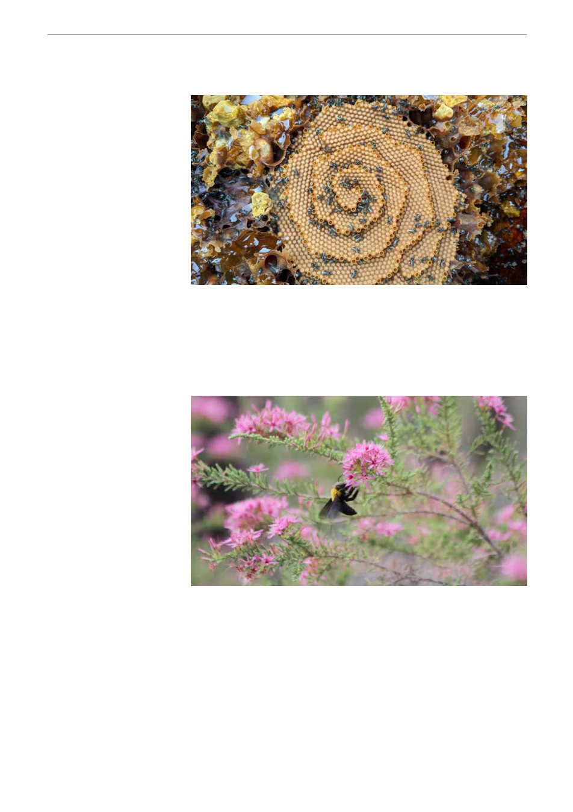

Image by: Rosalyn Gloag
Great carpenter bees are the largest bees in Australia. Carmen da
Silva
How will native bees cope
. . with climate change? Their nests hold a clue
Bees have many different
ways of building their
homes.
Many people will be familiar
with the hives of European
honeybees, often found in
tree cavities. But many
other bees – including
many of Australia’s roughly
2,000 species of native
bees – build their nests
underground, in plant
stems or in wood cavities.
Our new paper published in
shows that the extent to which native Australian bees can cope with increasing heat depends on the
type of nest they use.
Surprisingly, the species that are the most tolerant to heat are also the most vulnerable to future
warming.
An important
question
Understanding whether
tolerance to heat can
evolve is an important
question for understanding
how species might respond
to further climate change.
However, most studies
show no relationship
between how tolerant
land-based species are to
heat and the average
ambient temperatures
across their range (often
calculated at a coarse 1 x 1 kilometre resolution). This suggests most animals will have a very limited
ability to evolve greater tolerance to heat.
But these studies don’t consider species microclimates – that is, the climates species actually
experience depending on their behaviour. Our new study aimed to address this gap.
A four-month field trip
To understand how vulnerable bees are to warming climates, and whether bees can evolve in
response to changes in climate, we set out on a four-month field trip catching bees from the north to
south of Australia’s mainland and tested their tolerance to heat.